Our History
From 2010 to the present day
In the mid 2010s, our then pastor and associate pastor both accepted calls to shepherd other congregations in South Africa, after
many years of fruitful ministry to the believers of PBC and our community. During the state-mandated society lockdowns
of 2020-2022, the church called a missionary associated with PBC to serve as a sort-term pastor for a few years. The church also
experienced growth in attendance due to community involvement during the destitution of lockdowns.
Our new kitchen and bathroom extension were begun in 2023, and completed in early 2025, allowing for
better fellowship after the Sunday services, and catering and hosting events.
We give God all the Glory for his continued Grace over all these years, now spanning over 130 years.
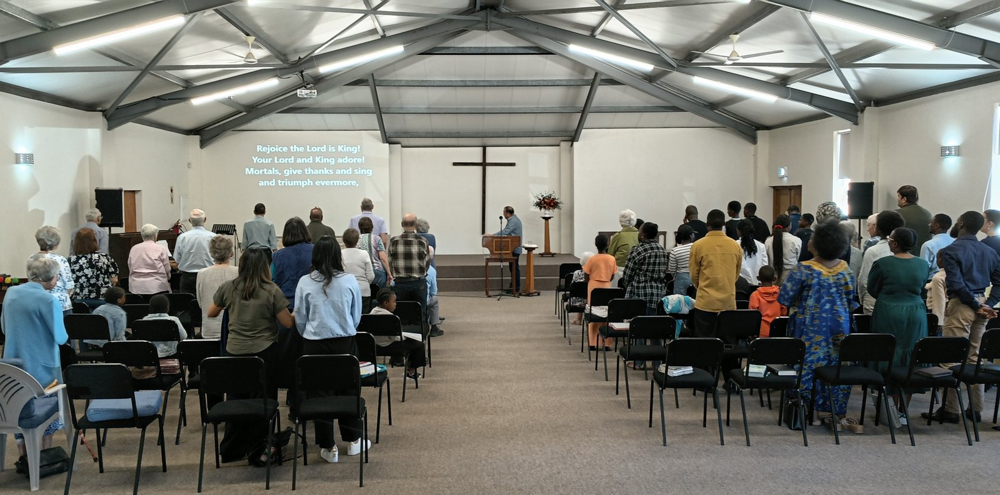
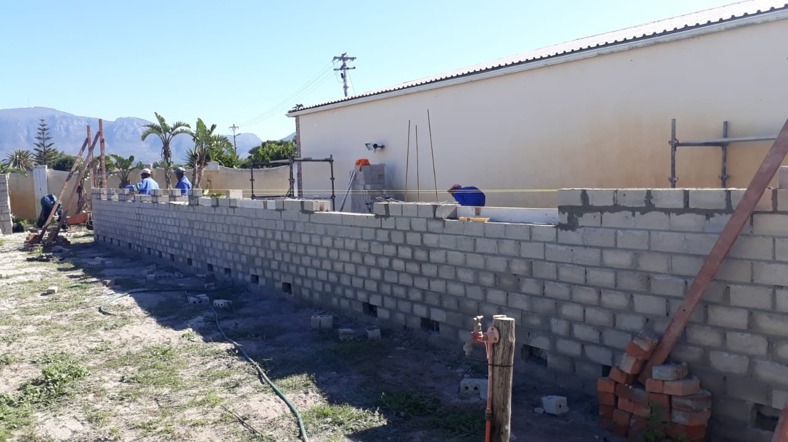
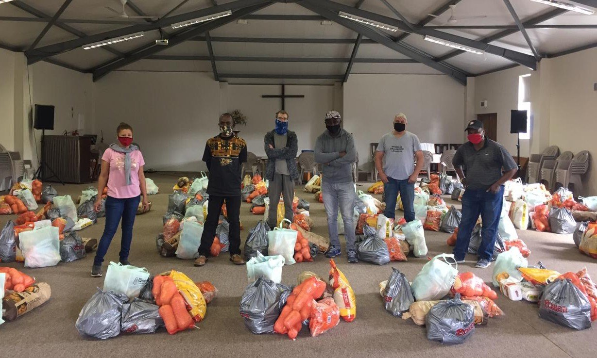
From 2007 to the 2010s
In Jan 2007, ministry began at our new location at 20 Toulon Avenue Plumstead, having moved from our historical
address in Wynberg. For most of 2007, the existing building at 20 Toulon Avenue was renovated, specifically to
make a small room for us to hold our Evening Church Services.
On 10 Feb 2008, we held our first Evening Service and kept our Morning Service at the Dutch Reformed Church in
Ophir Road, Plumstead.
On 3 Sep 2009, work began to build our New Hall in which we would hold both Morning & Evening Services, and
other events.
On 5 Dec 2010, with all work on the New Hall completed successfully, we held our first Morning Service.
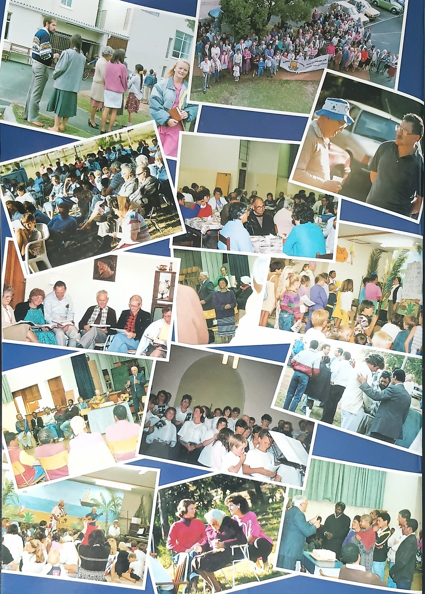
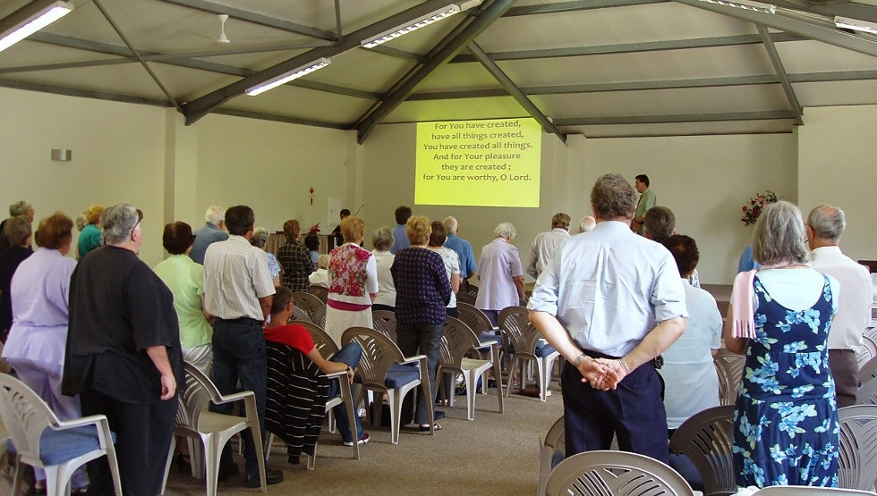

How it all began
It would be impossible to attempt to compile a history, however brief, of the Plumstead Baptist Church (formerly
known as Wynberg Baptist Church) without acknowledging the past role played by the members of Wale Street Baptist
Church (now located in Orange Street) in its establishment.
In these records, tribute is paid to the evangelising zeal of the Rev. W. Hamilton who came to South Africa
from Spurgeon’s College in London. Soon after his arrival, a preaching station was established at Wynberg.
The work began with cottage meetings in 1876. In 1878 the Rev. H.T. Batts arrived in Cape Town to assist the
Rev. Hamilton. For two months after his arrival the two men held a series of special services between Cape
Town and Wynberg, preaching almost every night. The cottage meetings soon grew into an organised service held
in the old Government School at the corner of Tenant Road. A year later the old Court House in Durban Road was
hired.
In 1880 the work moved into the Baptist Hall in Lower Church Street. The work was under the charge of Cape
Town until the arrival of the Rev. Ernest Baker from Spurgeons in 1891. Among the preachers in the early days
were W. Roberts, George White and D. L. Niddrie. These men often walked the whole distance from Cape Town to
Wynberg and back.
In 1891 the Wynberg cause was formed into a separate Church and the Rev. Ernest Baker was invited to be the
first pastor. The church thus constituted had twenty-one “foundation members”:
Miss Helena van der Bos, Mrs. R. Crane, Miss L. Gomez, Miss R. Stephens, Mrs. J. A. Cresner, Mrs. W. Bridgens,
Miss J. Higgs, Mr. J. Higgs, Miss A. W. Mathew, Mr. James Creser, Mr. Wm. Wright (Church Secretary), Mrs. Wright,
Miss Grace Wright, Mrs. A. Y. Mathew, Mr A Y. Mathew (parents of your life-Deacon Mr. E. A Mathew),
Mr. I. van Renan, Miss J. van Renan, Mr. Geo. Hutchinson, Mrs. G Hitchinson and Mr. A. W. Mathew.
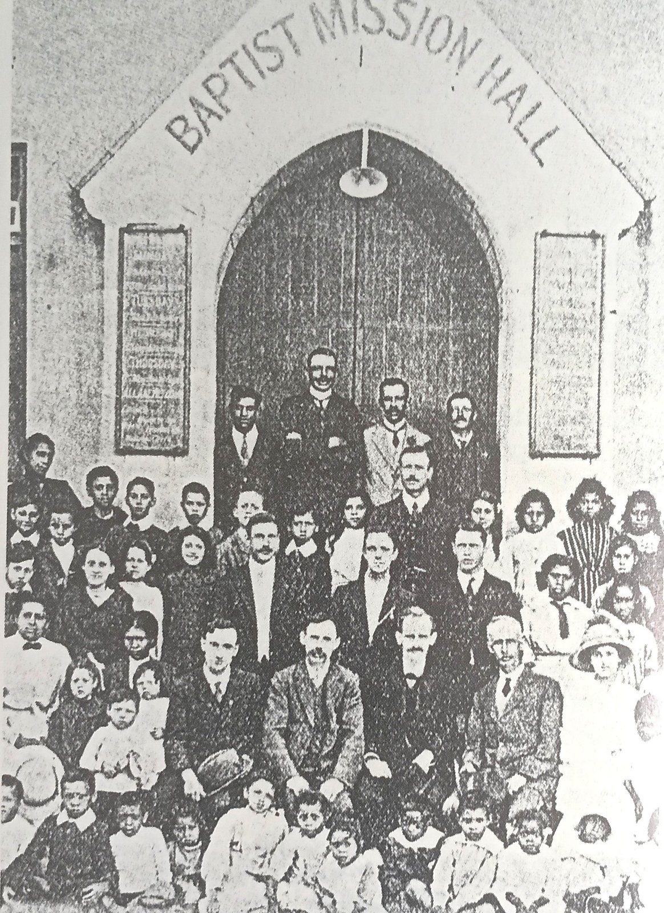
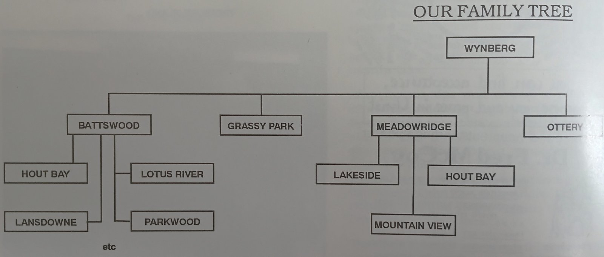
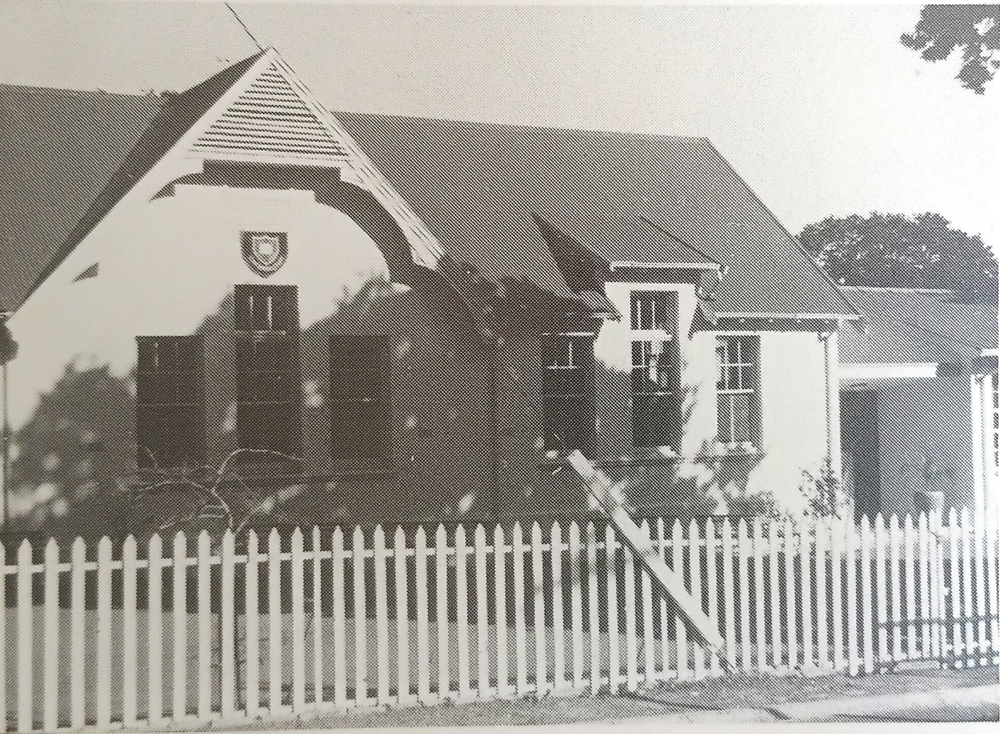
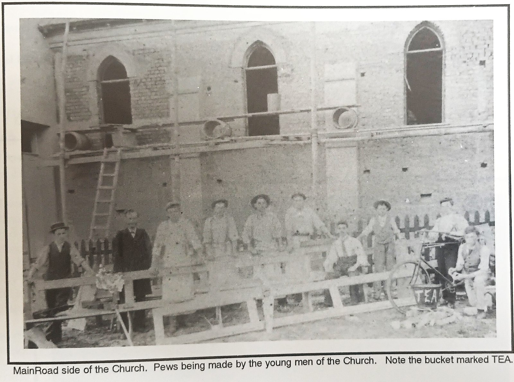
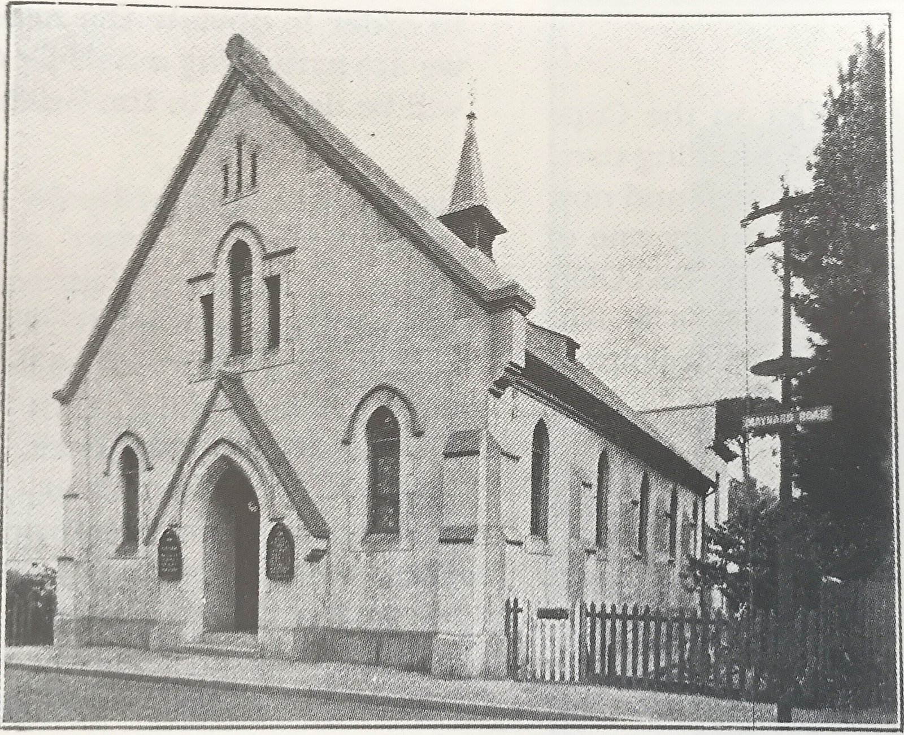
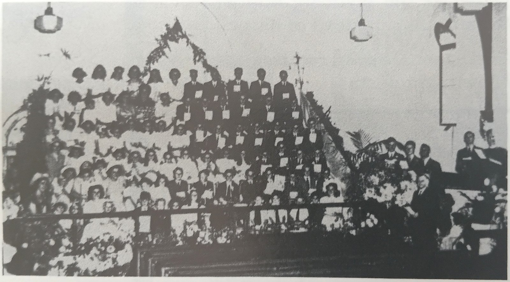
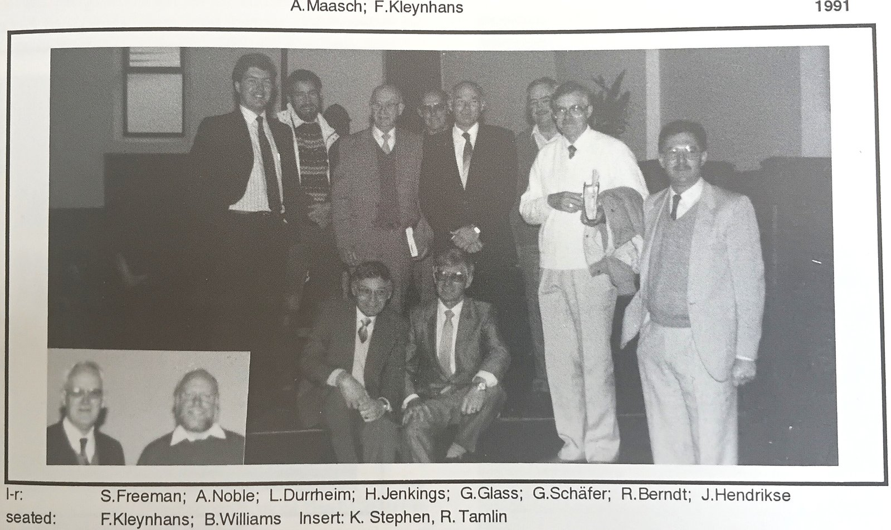
Statement of Faith
Plumstead Baptist Church is a member of the Baptist Union of South Africa (BUSA). We as Baptists share many areas of our faith with other members of the professing Christian Church. These include a belief in one God, Father, Son and Holy Spirit; in the supreme Lordship of Jesus Christ as Head of the Church; and in the Bible as the inspired Word of God, and as the final authority in all matters of faith and practice. There are however areas of principle and practice where we as Baptists make distinctive emphases arising out of our understanding of the Scriptures such as the direct lordship of Jesus Christ, the autonomy of the local church, believer’s baptism, the congregational principal of church government, the priesthood of all believers, the principle of religious liberty and the principle of separation of church and state.
We believe
- In the Scriptures of the Old and New Testaments in their original writings as fully inspired of God, and accept them as the final authority for faith and life;
- In one God, eternally existing in three Persons – Father, Son and Holy Spirit;
- In Jesus Christ the only begotten Son of God, who was conceived by the Holy Spirit, born of the Virgin Mary, and is therefore True God and True Man;
- That God created man in His own image; that man sinned and thereby incurred the penalty of death, physical and spiritual;
- That all human beings inherit a sinful nature, which issues (in the case of those who have reached moral responsibility) in actual transgression involving personal guilt;
- That the Lord Jesus Christ died for our sins, a substitutionary sacrifice according to the Scriptures, and that all who believe in Him are justified on the ground of His shed blood;
- In the bodily resurrection of the Lord Jesus Christ, His ascension into heaven, and His present life as our High Priest and Advocate;
- In the Personality and Godhead of the Holy Spirit, His indwelling of the Believer in Christ from the time of conversion, and the necessity of His work in making the death and resurrection of Christ effective to the individual;
- In the Holy, Catholic, Apostolic Church, which is the Body of Christ, of which Christ is the Head, and which is manifest locally in the gathering together of believers in obedience to Christ alone;
- That the Lord Jesus Christ appointed two ordinances – Baptism and the Lord’s Supper – to be observed as acts of obedience and as perpetual witnesses to the cardinal facts of the Christian faith;
- That Baptism is the immersion of the believer in water as confession of, and identification with Christ in burial and resurrection;
- That the Lord’s Supper is the partaking of bread and wine as symbolical of the Saviour’s broken body and shed blood in remembrance of His sacrificial death, “till He come”;
- In the priesthood of all believers;
- In the personal return of our Lord Jesus Christ, the bodily resurrection of the just and the unjust, the eternal blessedness of the saved, and the eternal punishment of the lost;
- That God has sanctioned marriage between a man and a woman, therefore we believe in heterosexual relationships between a natural man and a natural woman within the confines of lawful matrimony.
Squirrels Leap Farm
We called the place Squirrel's Leap because we felt like squirrels leaping into the unknown when we undertook this way of life; and we hoped to land on some branch, as squirrels do, even if it wasn't the one they aimed for.
We are privileged to own and use this beautiful property, which was purchased in 2006.
The old buildings were originally thatched and part of a farm called 'Squirrels Leap'.
The book "Cabbages and Cream" by VM Fitzroy describes her family's move to the farm in the 1940s, making an already-old building and plot into a working homestead. It is a very interesting account of life on a smallholding, growing a garden, taking care of cows, chickens, and children, and about the property and surroundings.
She relates “The house had been built more than a century before by a freed slave, and it had every characteristic of its period: thick whitewashed walls, low-slung thatch, shuttered windows, the air of being settled snugly on the land that Dutch architecture achieved as if without effort. Its builder had a grant of fourty acres of the land round about; it must have been a pearl of a property in those days; in fact, he called it Pearldale.”
They also had problems with moles, the sandy soil, and an old and maintenance-heavy building!
The Vernacular Architecture Society of South Africa (VASSA) visited the property on 2021, and included a writeup with some photographs in their November & December 2021 Newsletter. You can read the article here.
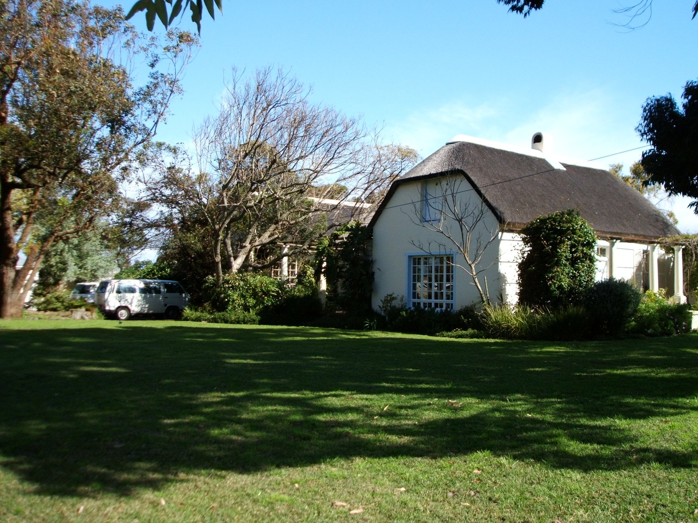
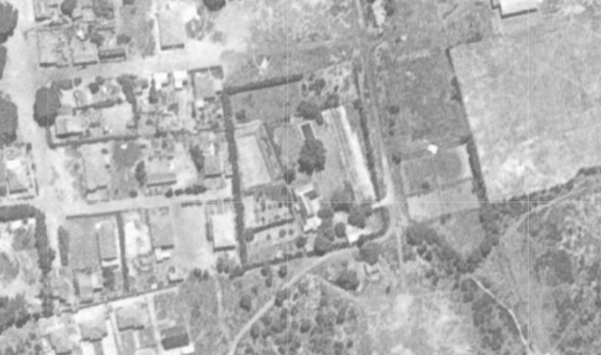


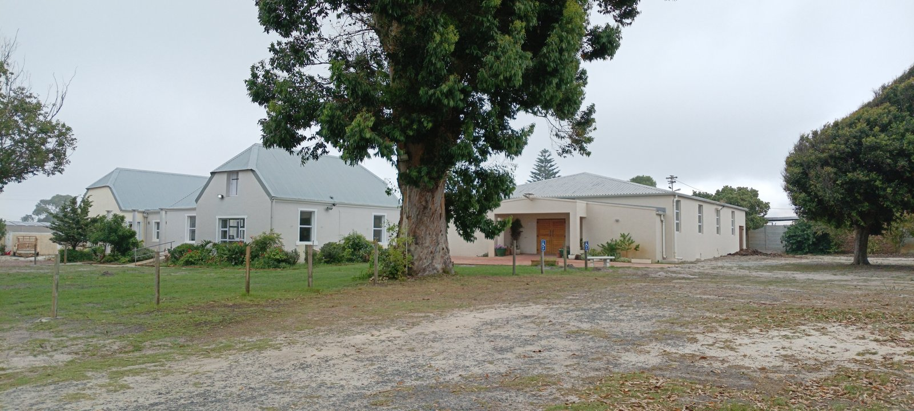
Ministries
Ministry is at the heart of church life at Plumstead Baptist Church. Below is an overview of how we serve one another and reach out to our wider community.
Service kinds
- Sunday worship services: Prayer, Bible preaching, congregational worship, and fellowship.
- Midweek Bible studies: Smaller group gatherings focused on Scripture, prayer, and mutual care.
- Youth and children: Age-appropriate teaching, discipleship, and activities throughout the year.
Missionaries
We support missionary work through prayer, practical encouragement, and financial giving. This includes both local and cross-cultural gospel partnerships.
Community outreach
We seek to serve our local community through practical care, pastoral support, and gospel witness. Outreach efforts include support for families, hospitality events, and opportunities to connect people with the life of the church.
Holiday clubs and seasonal events
During school holidays and key times of the year, we run church activities for children and families. These events provide Bible teaching, games, and opportunities to build friendships.
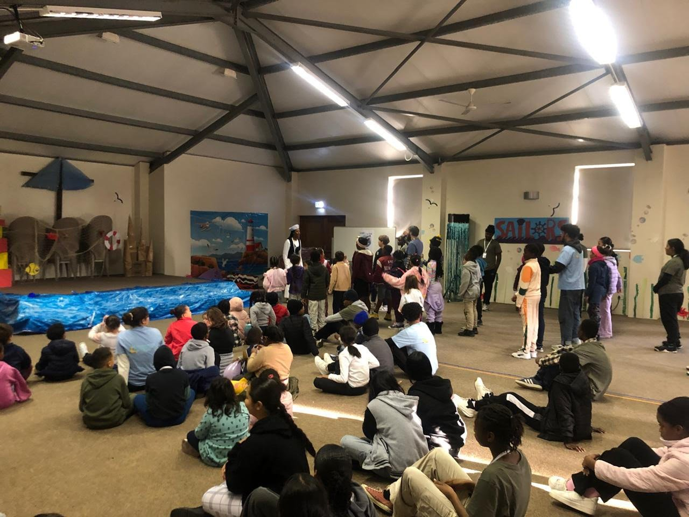
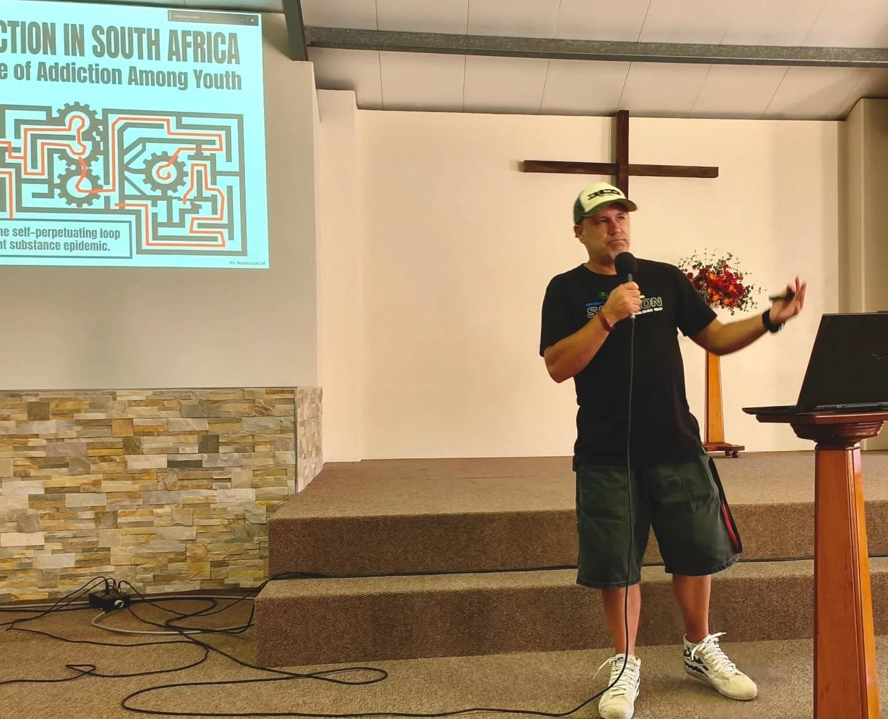
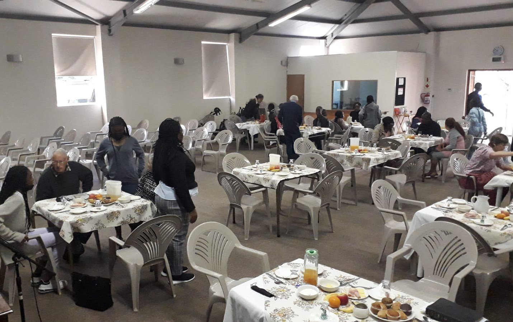
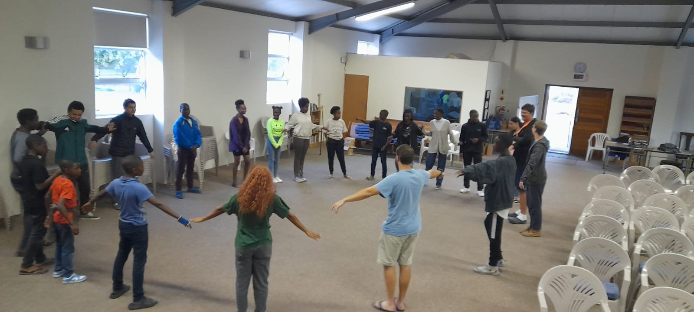